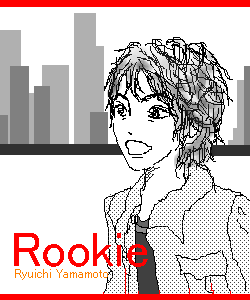
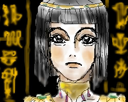
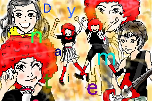
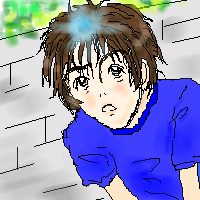

先週は『MTK Part�供戮搬蠅靴董�MTKのイラストを描いていました。

November.2002
『ルーキー』山元竜一
祝ソロ！ということでルーキー山元さんです。
いや〜、良い曲でした。何度聴いたことか。PVもすごく良かったし。
5年目のソロを記念して、ポスター風に作ってみました。
さてさて、今回の「ルーキー」での私的1番のツボ顔発表！！(笑)
「〜こうしてやってきたんだから」の「だから」の時の顔です。
またまた細かい！とツッコまれそうですね(笑)。
それだけじっくり見てるということなのですよ♪
山ちゃんの二重がよりくっきりなっている感じとか、いい感じでございます。

November.2002
『恋にメリーゴーラウンド』SPACE FAIRLY(スペル自信無し)
まずは、ごめんなさい！！！
思いっきり似てません。怖いし！一応ありちゃんを描こうとしてます。
最初はゆっこを描いていたのですが、どうしてもゆっこにならず（明らかな画力不足）、
最後の最後で急遽ありちゃんに変更しました。
そう言えば以前にもこうやってありちゃんを描いた事がある気が…（＾＾；）
衣装も背景の文字も適当でございます。とりあえず高級感を出す事を目的にしたのですが…う〜ん。

November.2002
『ダイナマイト』ザ・ヤマチーズ（2000年度）
「夢はダイナマ〜イト！」なヤマチーズでございます♪
幸運にも2000年度のビデオを見せて頂いたので嬉しくて描きました。
もう、幼いちーちゃんが可愛すぎ！！！！！！！
アフロが本当に可愛いし、セミロングで横分け前髪もプリティー♪
幼い声も舌ったらずな感じでもう、骨抜きです。あぁ〜ｖｖｖｖ
もう、本当にメッロメロでした。もちろん山ちゃんも可愛かったです（とってつけたように（笑））。
描きたい場面がありすぎてゴチャゴチャな絵になっちゃいました。
一応バックは爆発しております。で、二人がジャーンプ！
左下のちーちゃんが1番苦労しました。この表情難しすぎ！
PV見られた方は分かると思いますが、1番最初のサビでアフロちーちゃんが
「うるさ〜い！」みたいに耳をふさいでる（ように見えました）シーンです。
メチャメチャ可愛い表情だったんですが、うまく描けずにイライラしました。

November.2002
『VACATION』ホリデイズ
かけら探しの途中の卓也です。
イラストBBSでぎたれれさんが描いて下さった激似ホリデイズに触発されて咄嗟に描きました。
01年度をあまり見られなかった私にとって髪の長い卓也は新鮮です♪
でもこの絵、描いてる時は気分良く描いてたのですが、出来上がって見てみると…。
イマイチ気に入ってません。再チャレンジするかもしれません。